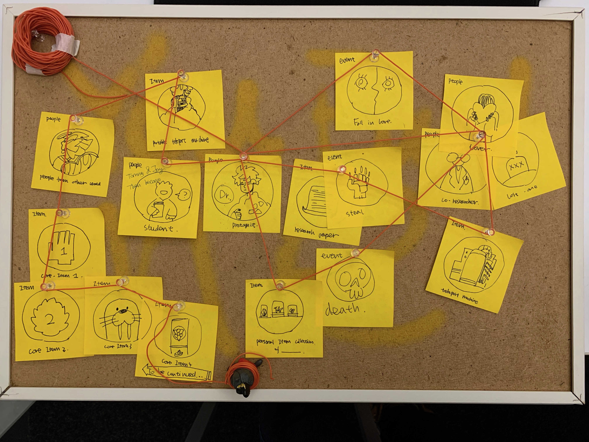
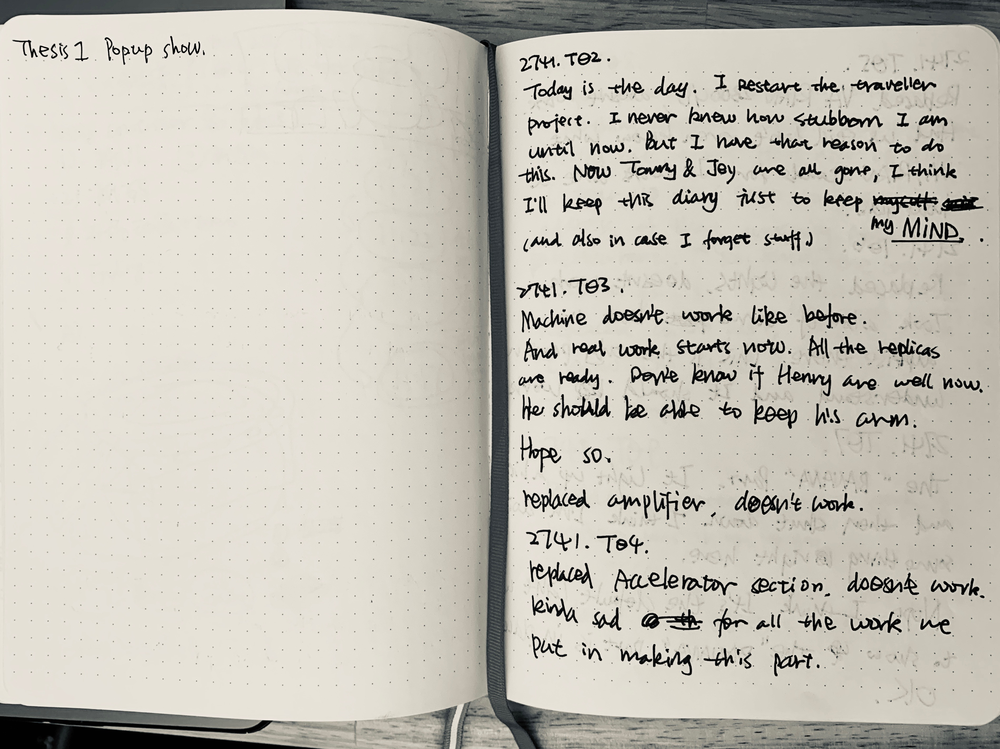
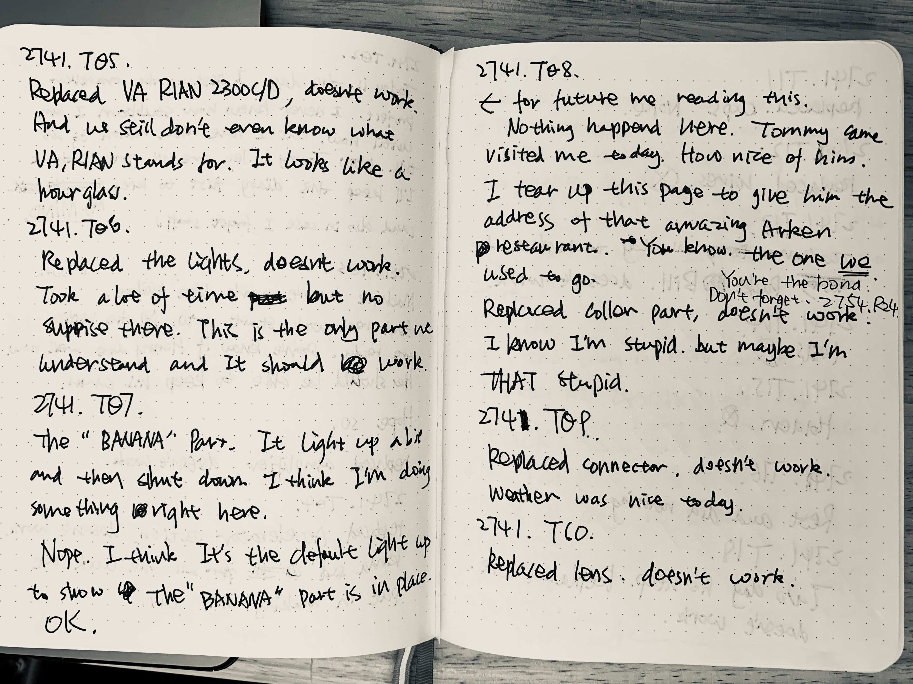
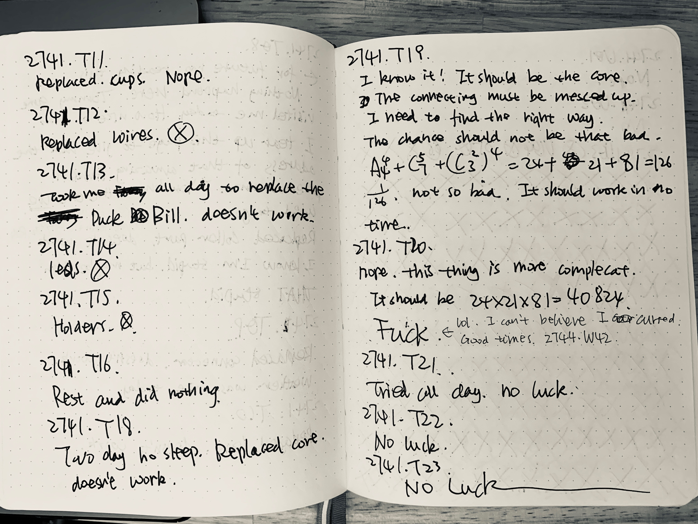
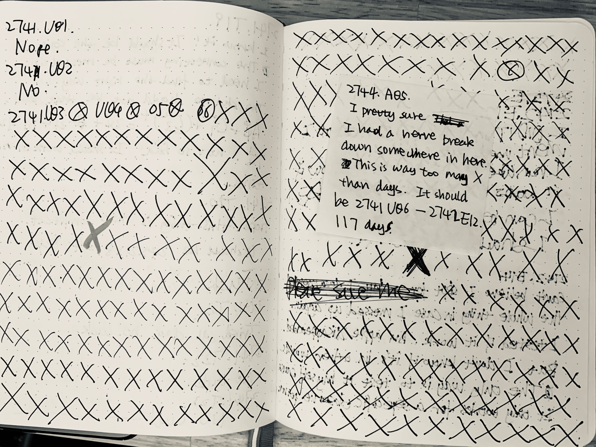
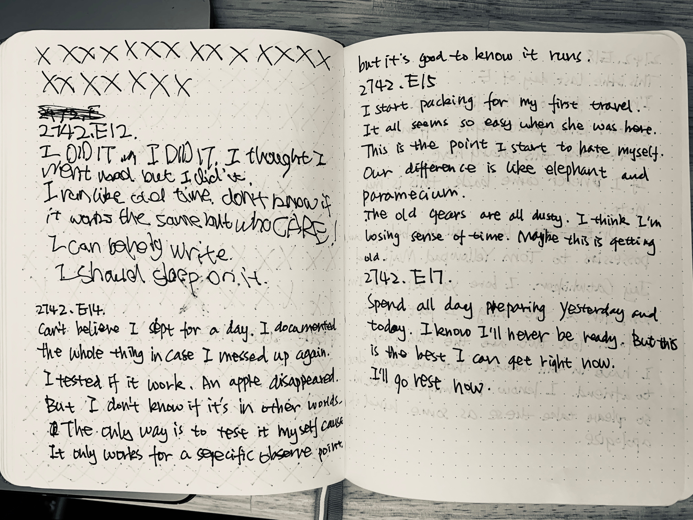
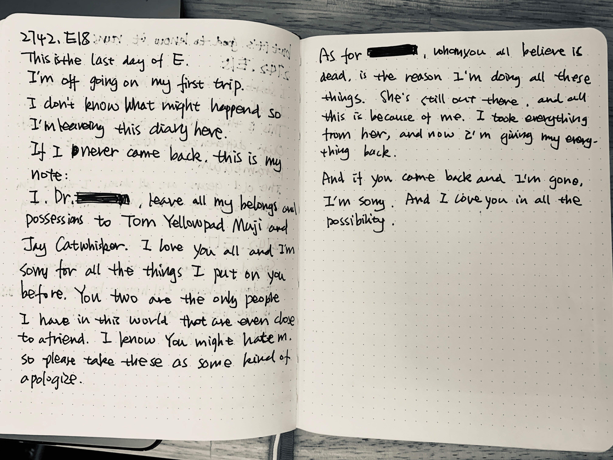

Week 11 Reflection
What did I do
The biggest thing that I did last week is made up my mind to give up the technological development aspect of my thesis, and just dive into the narritive aspect that I'm so excited about.
About 7 in 7
Here are the missing image of 7 in 7.
      What need to do
Since I don't have any doubt about the general diraction I'm heading down, I need to start working through some obstacle.
- How to make them engage for the begining of the experience/narritive.
- How to connect narritive of different media.
- How many people should engage with the experience at the same time.
- How to use the feeling people have with the objects to make them engage more.
- What is the feeling I want the audience to feel when they leave.
- ...
I'll start making small prototype for user testing on different question.
New Time Line
- First version of the story done. 11/13
- Storyboard/Scene/Moodboard for general style. 11/14
- User Test on main-story, storyboard and Diary. 11/15
- Pop up show world01 world building. 11/15-11/17
- Rewrite midterm paper. 11/15-11/17
- Alteration and development on storyline. 11/18-11/20
- Pop up show world02/03 world building. 11/20-11/25
- Pop up show storyline first version(should be connected with world 01/02/03) 11/27
- Storyline test and reversion. 11/27-11/30
- Pop-up objects making. 11/28-12/05
- Pop-up scene making. 11/28-12/05
- Pre Pop-up testing. 12/06
- Final reversion. 12/07-12/09
11/11/2019 Why socail media why.